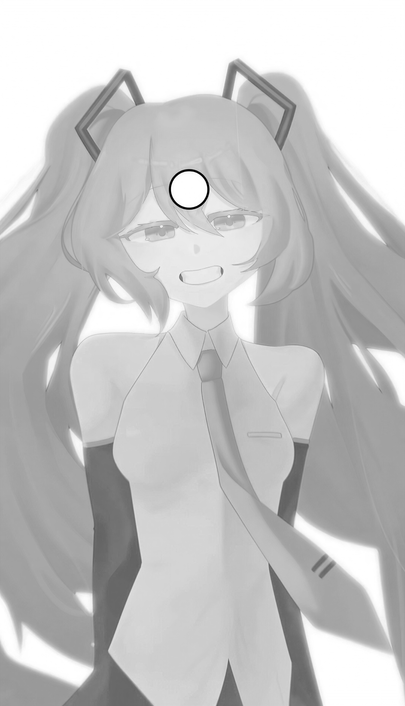
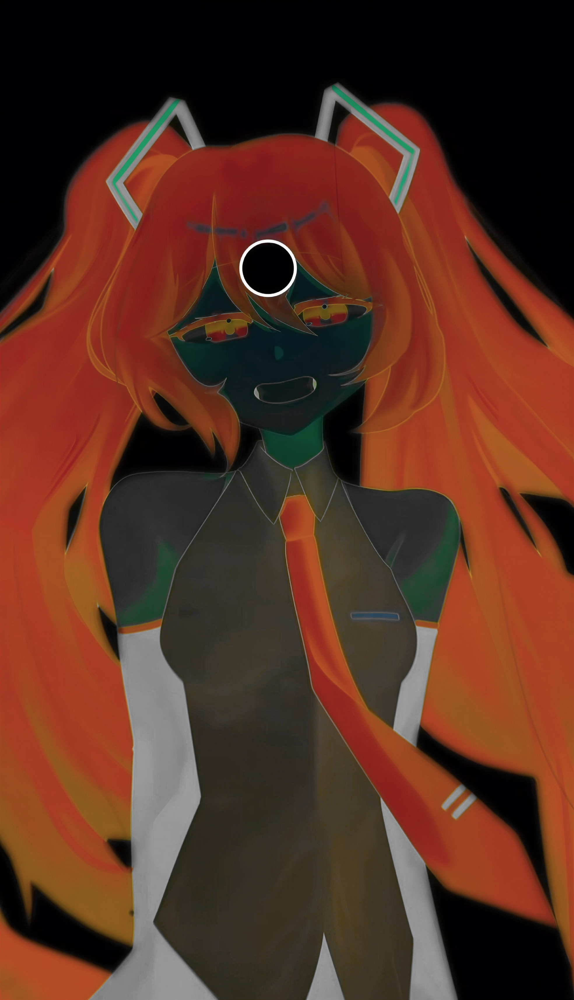

Movimento
Uma imagem pode virar três! Funciona melhor em telas de 120 Hz.
A

Uma imagem pode virar três! Funciona melhor em telas de 120 Hz.
A

Fusão Temporal de Cores
Duas cores podem virar cinza! Evite olhar por muito tempo.
Não use se você tem fotossensibilidade ou epilepsia fotossensível.
Pós-imagem Negativa
A imagem volta a ter cor! Mantenha o olhar no círculo central.


Pronto23 s
FPS—
EstadoParado
Intensidade0%